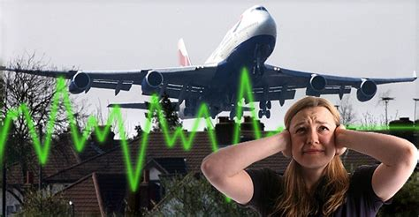
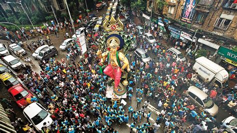
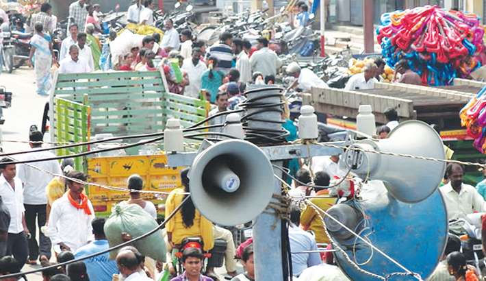
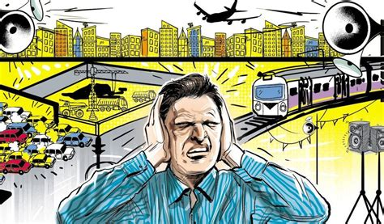

Pollution is the introduction of contaminants into the natural environment that cause adverse change.Pollution can take the form of chemical substances or energy, such as noise, heat or light. Pollutants, the components of pollution, can be either foreign substances/energies or naturally occurring contaminants. Pollution is often classed as point source or nonpoint source pollution. In 2015, pollution killed 9 million people in the world.
Major forms of pollution include: Air pollution, light pollution, littering, noise pollution, plastic pollution, soil contamination, radioactive contamination, thermal pollution, visual pollution, water pollution.
The dictionary explains pollution as “the presence in or introduction into the environment of a substance which has harmful or poisonous effects.” Wiki explains pollution as “the introduction of contaminants into the natural environment that cause adverse change.” Simply put, Environmental Pollution is something that brings harm to our environment and in turn to the people who exist based on the environment.




Environmental Pollution occurs when pollutants contaminate the surroundings; which brings about changes that affect our normal lifestyles adversely. Pollutants are the key elements or components of pollution which are generally waste materials of different forms. Pollution disturbs our ecosystem and the balance in the environment. With modernization and development in our lives pollution has reached its peak; giving rise to global warming and human illness.
Here we mainly discuss about 4 major types of pollution:
Air Pollution
Water Pollution
Soil Pollution
Noise Pollution
NB:To Know more about these types click on the buttons bellow.